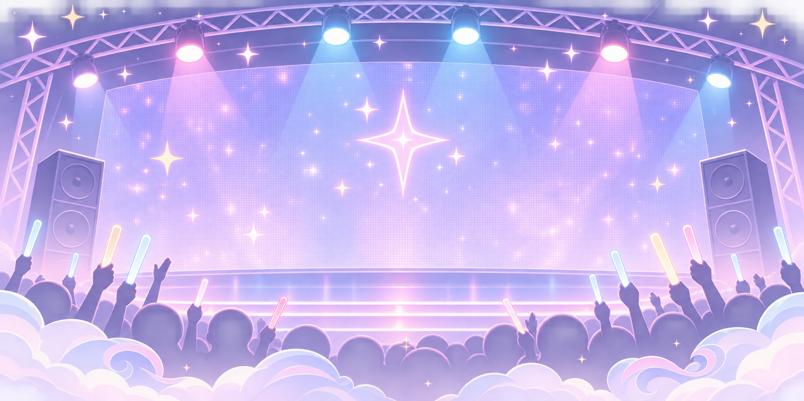
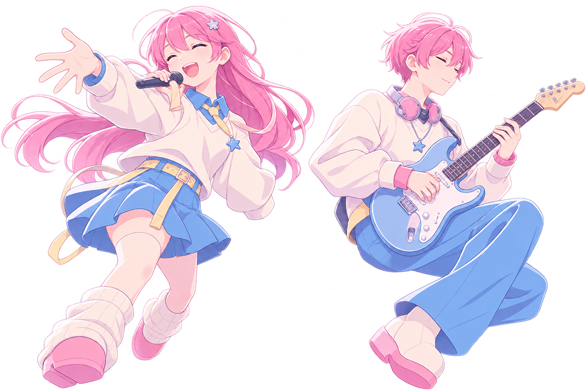
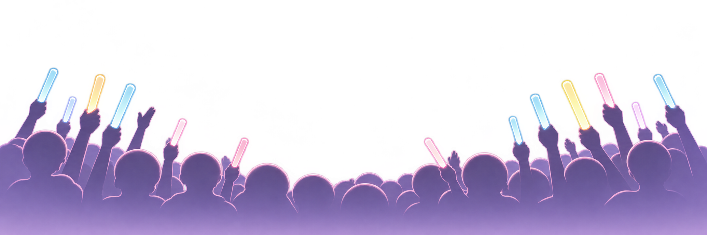
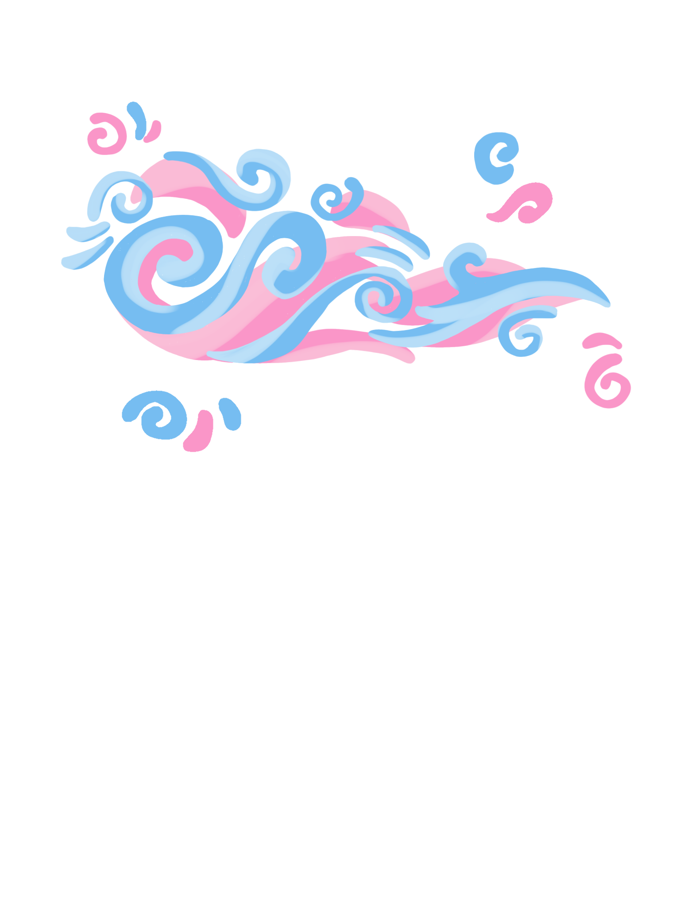
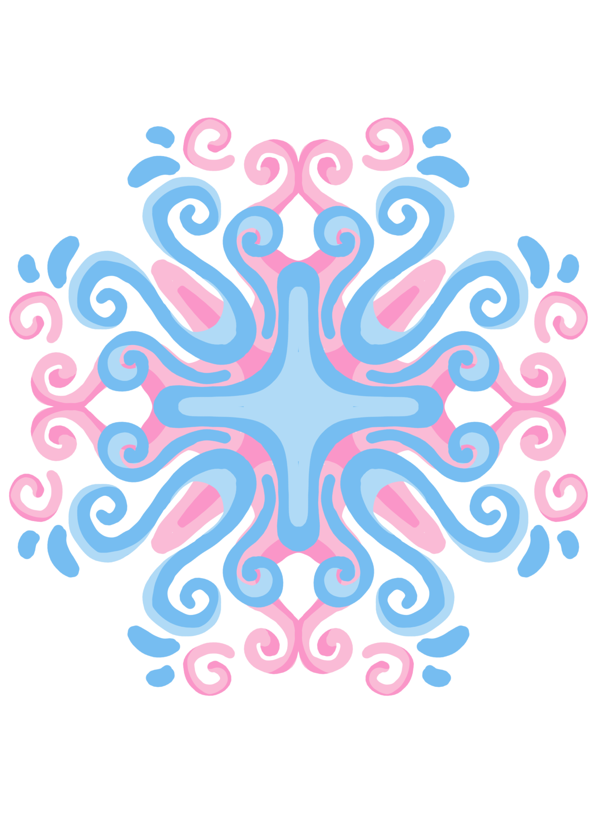
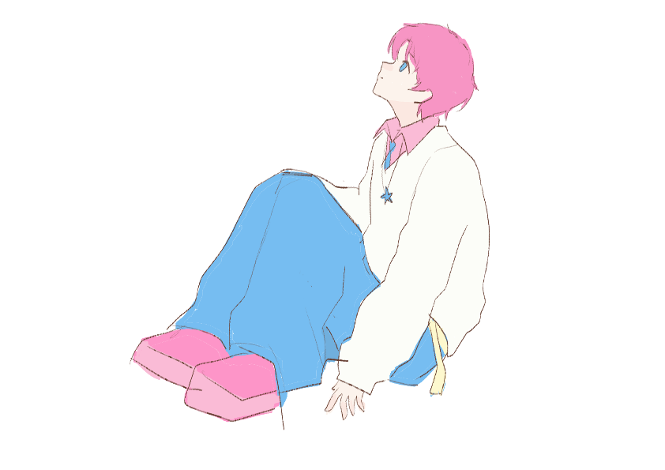
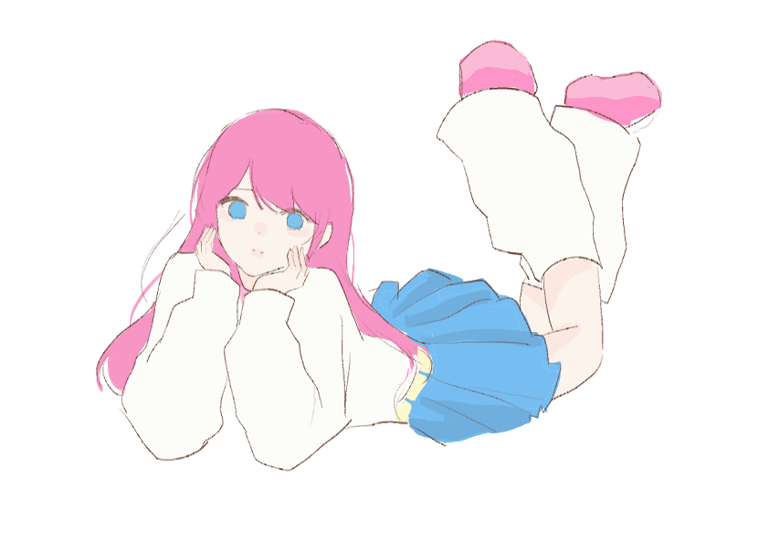
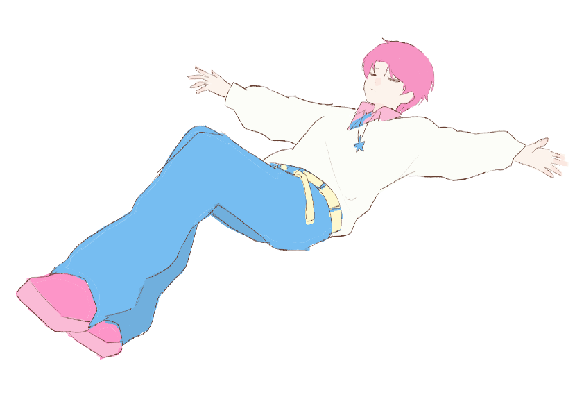

01 / MUDAH TERURAI
Organik
Sisa makanan, daun, dan bahan alami yang dapat terurai. Bisa diolah menjadi kompos.
↗




Dari Konser, Untuk Lingkungan
Musik menyatukan kita. Yuk, pastikan jejak setelah konser membawa dampak yang baik untuk bumi.
Mulai jelajahi ↓Euforia konser sering meninggalkan jejak sampah dalam jumlah besar. Botol minum, gelas plastik, tiket, kertas, hingga kemasan makanan bisa ditemukan setelah acara selesai.
Pisahkan sampah sesuai jenisnya agar bisa diproses dengan cara yang tepat. Ini langkah awal sebelum recycling dan upcycling.
Sisa makanan, daun, dan bahan alami yang dapat terurai. Bisa diolah menjadi kompos.
↗Plastik, kertas, kaca, dan logam. Pilah sesuai bahan agar dapat didaur ulang.
↗Bahan berbahaya dan beracun seperti baterai atau lampu. Jangan campur dengan sampah biasa.
↗Quick tip: Kosongkan dan bersihkan kemasan sebelum memasukkannya ke tempat daur ulang.
Lihat tips lainnya →Upcycling adalah proses kreatif mengubah barang bekas menjadi produk baru dengan fungsi atau nilai yang lebih tinggi. Bukan sekadar membuang—kita memberi kesempatan kedua.
Temukan ide upcycling →Mulai dari benda di sekitarmu. Pilih ide, siapkan bahan, dan coba buat versimu sendiri.

✿DIY 01Ubah kaleng bekas menjadi rumah baru untuk tanaman kecil.
Lihat langkah ↗
✳DIY 02Satukan potongan kain menjadi tas yang unik dan personal.
Lihat langkah ↗
✧DIY 03Manfaatkan botol plastik untuk merapikan alat tulis.
Lihat langkah ↗Mulai dari satu benda, satu ide, dan satu aksi kecil hari ini.
Mulai langkah kecil →